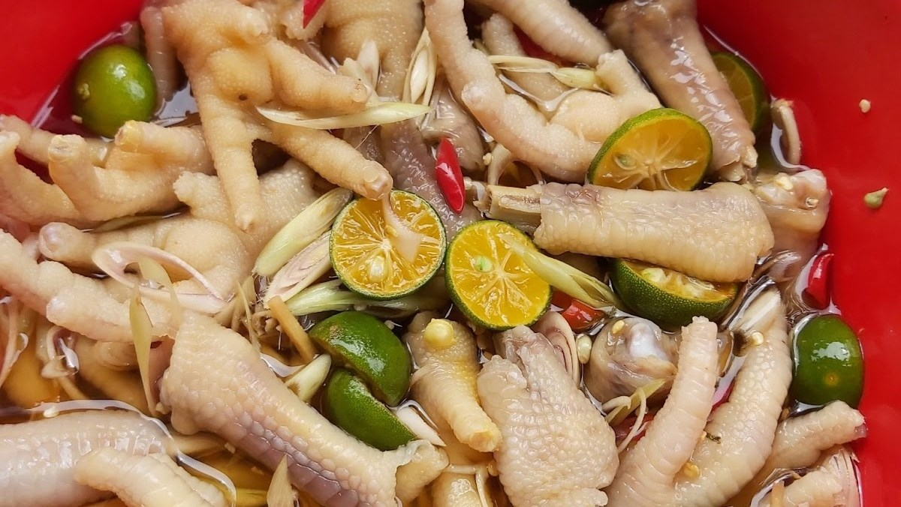

Cách làm chân gà sốt thái ngon mê liiiiii

Nguyên liệu cần chuẩn bị
- 1kg chân gà
- 1 quả xoài xanh
- 10 quả cốc non
- 15-20 quả tắc (quất xanh)
- 6 củ sả
- 6 củ tỏi
- 1 nhánh gừng
- Gia vị
Cách để mua được một quả cóc non ngon
- Chọn cóc có vỏ màu xanh tươi tự nhiên, không bị trầy xước hay chai sần.
Hạn chế chọn các vỏ ngả sang màu vàng vì đó là cóc để lâu, đã chín
- Cóc khi cầm thên thấy nặng, cứng, chắc tay, có mùi thêm nhẹ đặc trưng.
- Phần cuốn còn nguyên vẹn, dính chặt vào thân, nếu có 1 lớp nhựa xung quanh thì đó là cóc mới hái.
- Nên chọn những quae cóc còn mới, Không chọn cóc để lâu ngày vì sẽ mất đi đọ giòn của cóc
Cách chế biến Chân gà dốt Thái cóc non
1. Sơ chế nguyên liệu
- Chân gà mua về chần qua nước sôi và ngâm rửa với nước muối, sau đó rửa lại với nước sạch để khử mùi hôivà làm sạch chân gà.
- Cắt chân gà thành từng khúc vừa ăn.
- Tỏi đập dập và bằm nhuyễn, hành tím cũng đập dạp và băm nhuyễn, giữ lại 3 củ đập dập không băm để luộc chân gà
- Tắc bạn chia làm 2 phần, 1 phần vắt lấy nước,1 phần cắt thành khoanh tròn, bỏ hạt để trộn không bị đắng. Ớt bỏ cuốn, rửa sạch và cắt lát.
- Cóc mua về gọt vỏ rửa sạch và cắt làm đôi. Sả thì bạn cắt khúc, chừa lại 3 tép đập dập để luộc chân gà.
2. Luộc chân gà
- Chuẩn bị 1 nồi nước sôi, để sả, củ hành tím đã đập dập vào nồi. Tiếp đó cho chân gà vào luộc trong vòng 15 phút.
- Vướt chân gà ra và cho đá viên vào ngâm trong 10 để chân gà săn chắc và giòn ngon.
- Sau đó vớt chân gà ra để cho ráo nước.
3. Làm sốt Thái
- Cho 1 cái nồi lên bếp, cho vào 5 muỗng canh dầu ăn, đợi dầu sôi thì cho phần hành tím và tỏi đã băm vào phi cho vàng đều thì hạ nhỏ lửa và cho tiếp thêm 250 gam đường, 2 muỗng canh tương ớt, 2 muỗng canh bột ớt, dùng đũa trộn đều.
- Tiếp đó cho 180ml nước lọc vào, nấu với lửa lớn trong vòng 3 phút sao cho phần sốt sánh lại thì tắt bếp. Tiếp đó, cho phần nước tắc vào, để nguội.
4. Trộn chân gà
- Cho chân gà cào một cái tô hoặc một cái bát, đổ lần lượt sả, tắc, cóc và nước sốt vào.
- Dùng tay trộn cho phần chân gà và phần sốt đều nhau và thấm đều gia vi.
- Đem ướp trong vòng 4 - 5 tiếng để chân gà được ngon hơn

5. Thành phẩm
- Chân gà sốt Thái cóc non có màu sắc vô cùng bắt mắt và quyến rũ người thưởng thức, những chiếc chân gà giòn với fgia vị chua chua ngọt ngọt kích thích vị giác, khi ăn kết hợp với cóc non thì vô cùng hấp dẫn
- Đảm bảo mọi người sẽ thích món này đấy.
- Sau này là video hướng dẫn chi tiết để các bạn tham khảo
- Mình xin cảm ơn và mong các bạn ủng hộ ạ
Video hướng dẫn chi tiết ở đây ạ moa moa.